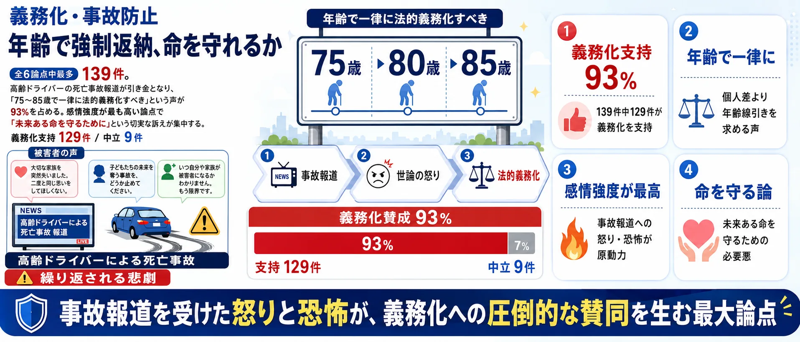
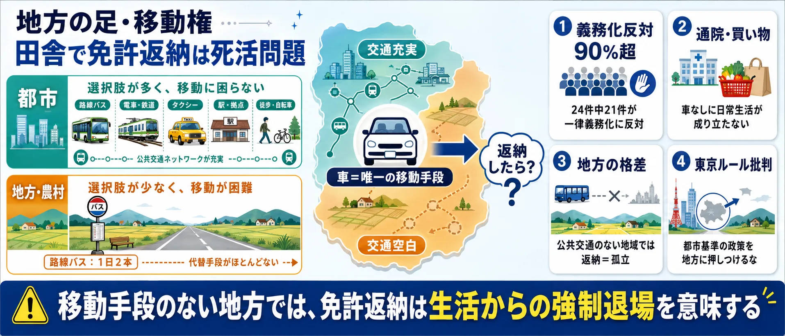
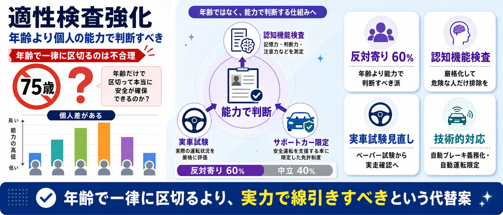
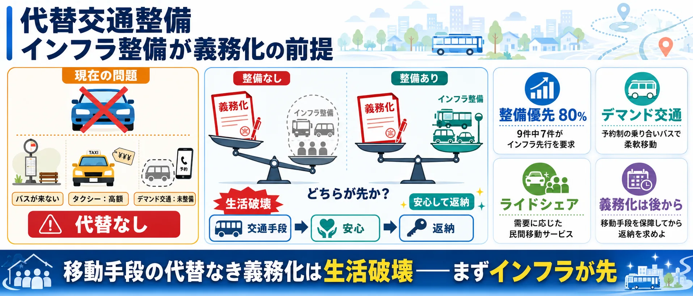
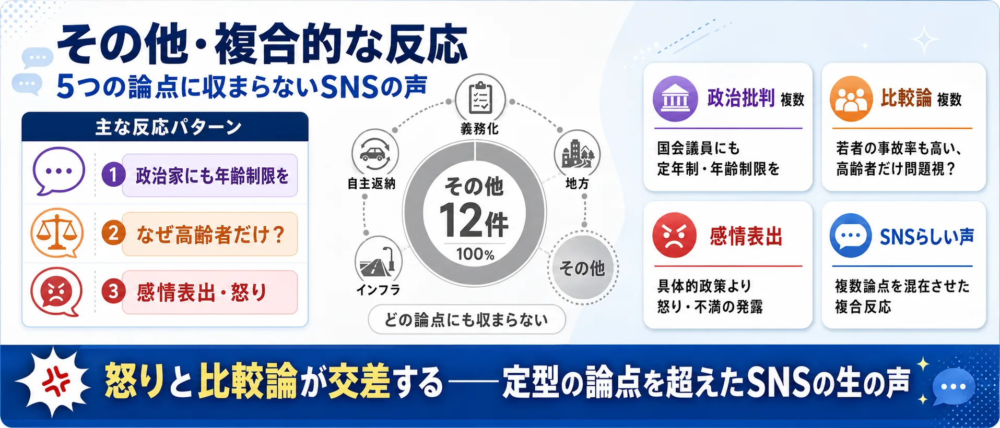

論点①
義務化・事故防止 — 「年齢で強制返納、命を守れるか」221件
高齢ドライバーの死亡事故報道を受け、75〜85歳などで一律義務化を求める声。全6論点中で最多。感情強度が高い投稿が集中。
義務化: 年齢で一律に法的義務化すべき
懸念: 個人差を無視した一律規制は問題

事故を防ぐための年齢線引きか、暮らしの足を奪わない制度設計か？
Yahooリアルタイム検索で取得した公開投稿506件のうち、意見と判定した353件を分析対象としています。世論調査ではなく、SNS反応サンプルの論点比較です。
高齢者の運転免許を年齢で一律に返納させるべきか（高齢者免許返納）
Yahoo!リアルタイム検索で集めた公開投稿のサンプルです。社会全体の世論ではありません。
収集期間 2026-06-27〜2026-09-04／収集506件・意見353件（この図の母数）／更新 2026-09-04
山を押すと、その論点の図解と、賛成・反対それぞれの投稿が読めます
山を押すと、その論点へ移ります（面積＝強く語られた投稿の数）
マス目100個が、いま見ている立場の全部です。 色つきのマスの数が、そのまま割合（％）になります。
件数
このページは、お使いの環境で図を描けなかったため、同じ内容を一覧で表示しています。円をえらぶと、その論点の内訳へ移動します。円の色はいちばん多い立場です。
221件（62.6%） 山の高さ：強い表現47.7%
立場の内訳は、この論点の全件で数えています
立場ごとに、その立場の中でこの論点が占める割合
この論点の中身（編集部が本文を読んで分けたもの）
一次資料と照らした結果
資料との照合
51件（14.4%） 山の高さ：強い表現22.1%
立場の内訳は、この論点の全件で数えています
立場ごとに、その立場の中でこの論点が占める割合
一次資料と照らした結果
資料との照合
29件（8.2%） 山の高さ：強い表現32.0%
立場の内訳は、この論点の全件で数えています
立場ごとに、その立場の中でこの論点が占める割合
この論点の中身（編集部が本文を読んで分けたもの）
一次資料と照らした結果
資料との照合
20件（5.7%） 山の高さ：強い表現34.7%
立場の内訳は、この論点の全件で数えています
立場ごとに、その立場の中でこの論点が占める割合
16件（4.5%） 山の高さ：強い表現29.2%
立場の内訳は、この論点の全件で数えています
立場ごとに、その立場の中でこの論点が占める割合
一次資料と照らした結果
資料との照合
16件（4.5%） 山の高さ：強い表現27.7%
立場の内訳は、この論点の全件で数えています
立場ごとに、その立場の中でこの論点が占める割合
一次資料と照らした結果
資料との照合
このテーマは、まだ編集部が一次資料を読んで「語られていないこと」を確かめていません。確かめるまで、ここは空のままにします。
このテーマは、論点をまたいで言えることの整理がまだです。書けるまで、ここは空のままにします。
「高齢者の免許返納」の議論は「義務化すべきか否か」だけではありません。地方の移動手段・適性検査の精度・代替交通のインフラ・自主返納へのインセンティブ——6つの論点を整理してから投票に進んでください。
義務化・事故防止 — 「年齢で強制返納、命を守れるか」221件
高齢ドライバーの死亡事故報道を受け、75〜85歳などで一律義務化を求める声。全6論点中で最多。感情強度が高い投稿が集中。

地方の足・移動権 — 「田舎で免許返納は死活問題」29件
地方では車なしに通院も買い物もできない。「東京の感覚で語るな」という切実な声が多く、義務化への強い反対（90%超）が特徴。

適性検査強化 — 「年齢より個人の能力で判断すべき」51件
認知機能検査・実車試験の厳格化を求め、一律年齢制限の代替案を提唱。サポートカー限定免許など技術的対応を好む立場も含む。

代替交通整備 — 「インフラ整備が義務化の前提」16件
デマンド交通・コミュニティバス・ライドシェアの整備が先決という立場。返納させるなら移動手段の代替を保障せよという順番論。

自主返納支援 — 「特典と支援で自発的な返納を促す」16件
バス・タクシー割引や買い物支援など、返納のメリットを実感できる制度設計を求める声。強制より誘導を好む立場。

その他・複合 — 「政治批判・感情表出・分類外」20件
政治家への年齢制限要求・感情的な怒りの発露・複数論点の混在など、上記5カテゴリに収まらない反応。SNSらしい生の声。

使い方: 6つの論点を把握してから、次の投票で「自分が一番気になる論点」を選んでください。
高齢運転手による死亡事故が報じられるたび、免許返納の義務化を求める声が上がる一方、地方での生活維持や移動手段確保を重視する反対意見も根強くあります。あなたが最も気になる論点はどれですか？
1あなたが最も気になる論点をタップ （全2問）
※ サイト参加者の集計であり、世論調査ではありません。回答と、24時間の重複防止用に一方向変換した接続元情報をサーバーに保存します。
この論点に分類された意見は221件。スタンス別内訳は正典から自動集計しています。
重大事故なら免許返納義務化を支持
@PsyDuckisking の投稿をXで見る
85歳以上の免許返納義務化を望む
@senchanpe の投稿をXで見る
この論点に分類された意見は29件。スタンス別内訳は正典から自動集計しています。
39歳で自主返納しタクシー代の負担を語る
@HonokaBoat の投稿をXで見る
地方居住者が免許返納後の生活困窮を訴える
@new_yamanjy_thd の投稿をXで見る
この論点に分類された意見は51件。スタンス別内訳は正典から自動集計しています。
年齢一律の返納には反対、更新時の検査を厳格化すべきとの意見
@dare_iwan の投稿をXで見る
実車試験見直しによる高齢ドライバー安全対策を支持
@Blackhole260685 の投稿をXで見る
この論点に分類された意見は16件。スタンス別内訳は正典から自動集計しています。
返納者の継続的な代替交通手段の確保を提言
@ayashii5 の投稿をXで見る
高齢者対策に先立ち移動手段の整備を主張
@hoho_desu の投稿をXで見る
この論点に分類された意見は16件。スタンス別内訳は正典から自動集計しています。
体調不良により運転免許を自主返納した体験
@NICORIRIS の投稿をXで見る
統合失調症などで免許を自主返納した経験
@homes9991 の投稿をXで見る
この論点に分類された意見は20件。スタンス別内訳は正典から自動集計しています。
高齢者の免許返納を求めるなら、政治家にも年齢制限を設けるべきとの主張
@nucomass の投稿をXで見る
高齢者の免許返納と同様に、国会議員にも年齢制限を設けるべきとの主張
@uikun の投稿をXで見る
高齢者はガソリン車運転禁止、EV自動運転に舵を切るべき。
@minto_kun0617 の投稿をXで見る
一律の年齢制限ではなく、認知機能検査を厳格化すべき。
@Cu_the_3rd の投稿をXで見る
高齢ドライバーによる重大事故が相次いで報道されたことをきっかけに、一定年齢以上の運転免許の返納を義務化すべきかどうかが議論になっています。現在の制度では返納はあくまで任意で、75歳以上には認知機能検査、一定の違反歴がある人には運転技能検査が課されています。
義務化に賛成する立場からは「加齢による判断力・身体能力の低下は避けられず、事故を未然に防ぐべきだ」という主張があります。一方で反対する立場からは、「地方では車がなければ生活が成り立たない」「年齢で一律に区切るのは合理的でない」「若年層の事故率も高く、高齢者だけを問題視するのは不公平だ」という反論があります。
折衷的な立場として、サポートカー限定免許のような条件付き免許の拡充、公共交通やデマンド交通の整備、免許とは別の移動手段の保障を先に進めるべきだという意見も多く、安全と生活の足の確保をどう両立するかが核心的な論点になっています。
意見353件を正典の classification.stance で集計。
意見353件を正典の classification.stance で集計。
意見353件を正典の classification.stance で集計。
意見353件を正典の classification.stance で集計。
| 義務化・事故防止 | 221 |
|---|---|
| 地方の足・移動権 | 29 |
| 適性検査強化 | 51 |
| 代替交通整備 | 16 |
| 自主返納支援 | 16 |
| その他 | 20 |
| 合計 | 353 |
| 義務化賛成 | 187 |
|---|---|
| 条件付き賛成 | 76 |
| 義務化反対 | 38 |
| 中立・情報 | 52 |
| high | 129 |
|---|---|
| medium | 180 |
| low | 44 |
| 分類 | 免許返納 おかしい | 免許返納 地方 生活 | 免許返納 年齢制限 | 免許返納 義務化 | 運転免許 自主返納 | 高齢ドライバー 事故 対策 | 高齢者 免許返納 反対 | 高齢者 免許返納 賛成 | 高齢者 運転 やめろ | 高齢者 運転 義務化 | 合計 |
|---|---|---|---|---|---|---|---|---|---|---|---|
| 免許返納義務化に賛成（高齢運転手の事故防止を最優先） | 19 | 2 | 8 | 28 | 1 | 1 | 0 | 2 | 0 | 7 | 68 |
| 免許返納義務化に反対（地方の生活維持や移動手段確保を重視） | 5 | 13 | 0 | 0 | 0 | 0 | 0 | 1 | 0 | 0 | 19 |
| 適性検査や技術的制限の強化で対応（年齢一律の義務化は避けるべき） | 0 | 1 | 1 | 1 | 0 | 6 | 1 | 0 | 1 | 0 | 11 |
| 代替移動手段や公共交通機関の整備を優先すべき | 0 | 3 | 0 | 0 | 3 | 1 | 0 | 0 | 0 | 0 | 7 |
| 自主返納のインセンティブ強化（特典や支援）を進めるべき | 0 | 1 | 0 | 0 | 14 | 0 | 0 | 0 | 0 | 0 | 15 |
| その他・分類保留 | 14 | 4 | 1 | 6 | 21 | 13 | 0 | 0 | 2 | 2 | 63 |
| 分類 | 義務化賛成 | 義務化反対 | 適性検査強化 | インフラ優先 | 自主返納促進 | その他 | 合計 |
|---|---|---|---|---|---|---|---|
| 免許返納義務化に賛成（高齢運転手の事故防止を最優先） | 68 | 0 | 0 | 0 | 0 | 0 | 68 |
| 免許返納義務化に反対（地方の生活維持や移動手段確保を重視） | 0 | 19 | 0 | 0 | 0 | 0 | 19 |
| 適性検査や技術的制限の強化で対応（年齢一律の義務化は避けるべき） | 0 | 0 | 11 | 0 | 0 | 0 | 11 |
| 代替移動手段や公共交通機関の整備を優先すべき | 0 | 1 | 0 | 6 | 0 | 0 | 7 |
| 自主返納のインセンティブ強化（特典や支援）を進めるべき | 0 | 1 | 0 | 0 | 14 | 0 | 15 |
| その他・分類保留 | 3 | 0 | 0 | 0 | 0 | 60 | 63 |
 自転車の青切符
自転車の青切符 部活動の地域移行
部活動の地域移行 憲法改正論議
憲法改正論議